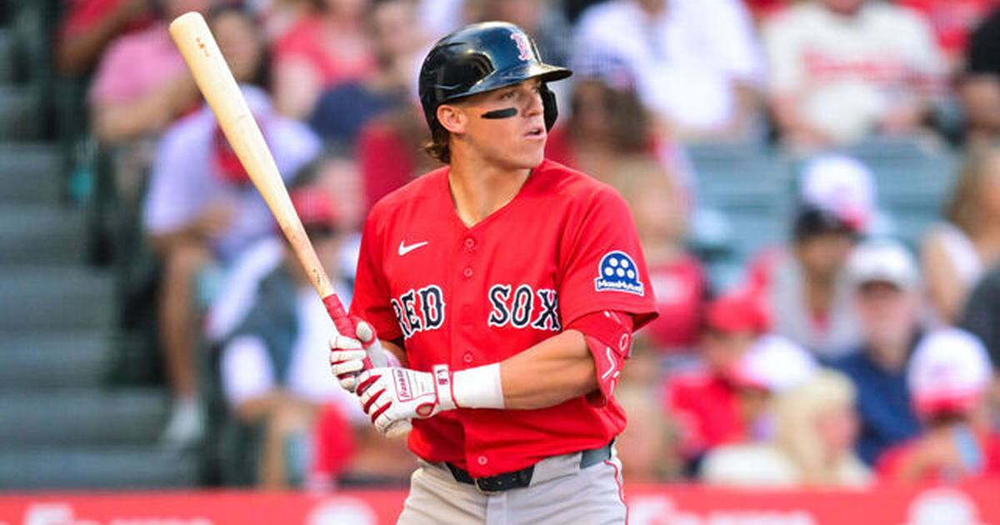

Red Sox Open Offseason by Clearing Two Roster Spots
Boston traded Nate Eaton to the Athletics for 18-year-old pitching prospect Jareth Rayo on Thursday, opening the offseason roster shuffle with two spots still to clear before players return from the 60-day injured list on Monday, November 2.

Disclosure: this post contains affiliate links. I earn a commission on qualifying purchases.
The first move
The Boston Red Sox wasted no time getting their offseason underway. On Thursday, Boston traded Nate Eaton to the Athletics for 18-year-old pitching prospect Jareth Rayo — the opening move in a roster shuffle that has a hard deadline attached.
The roster crunch
The trade is about space as much as it is about the return. Boston still has two roster spots to clear before players return from the 60-day injured list on Monday, November 2. That deadline is what makes a quiet Thursday deal worth watching: the front office has to get the roster math right before the injured-list returns force its hand.
The return: Jareth Rayo
Coming back to Boston is Jareth Rayo, an 18-year-old pitching prospect. At that age, this is a long-view acquisition — a young arm added to the system while the major-league roster gets its offseason reset.
What to watch
• The deadline: Two more spots to clear before Monday, November 2, when 60-day injured-list players come back onto the roster.
• The pace: The Eaton deal came on Thursday, right at the start of the offseason — a sign the front office is moving early rather than waiting out the crunch.
• The pipeline: Rayo, at 18, is a development piece — the kind of return that only pays off years down the line.
Source: Heavy's report on the Red Sox's first offseason trades
Watch
Source: ALERT: Boston Red Sox Must CLEAR House—Craig Breslow's First Nate Eaton Trade Signals MORE — Locked On Red Sox. A breakdown of the Red Sox opening the offseason by trading Nate Eaton to the Athletics, framed as a signal of further roster changes to come.
Gear up: Fanatics